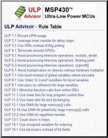

ULP Advisor
A new CCS
compiler feature that checks your MSP430 code against a
checklist of Ultra-Low Power best practices. With this
advice, you can be sure that your code is as efficient as
possible.

What is
ULP Advisor?
ULP
(Ultra-Low Power) Advisor is a brand new tool for guiding
developers to write more efficient code to fully utilize the
unique ultra-low power features of MSP430 microcontrollers.
Aimed at both experienced and new microcontroller developers,
ULP Advisor checks your code against a thorough ULP checklist to
squeeze every last nano amp out of your application. At build
time, ULP Advisor will provide notifications and remarks to
highlight areas of your code that can be further optimized for
lower power. Within these notifications, developers will get a
description of the ULP rule in violation, and will also get a
link to this ULP Advisor wiki for further information, links to
relevant documentation, code examples and forum posts!
Features